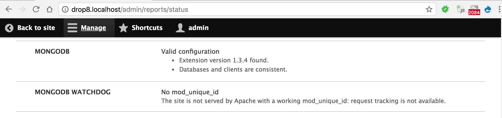

Installation and Settings
To summarize:
- Install prerequisites
- Download the MongoDB module suite to the site
- Configure settings
Installing the prerequisites
The MongoDB module and submodules need some configuration to be useful. This guide assumes that :
- A MongoDB server instance has already been installed, configured and is available for connection from the Drupal instance, in a version MongoDB still supports. As of 2026-09-28, these are 7.0, 8.0 and 8.3: see MongoDB's lifecycle page. 8.x-2.1 was tested against MongoDB 7.0 when it was released, and against 8.3 on 2026-09-28. Which extension and library versions each server version needs is listed in MongoDB's compatibility tables. AWS DocumentDB and Azure CosmosDB might work but are not tested. Be sure to report any issue you could have with them.
- The mongodb (not mongo) PHP extension is installed and configured, in a 1.x version, 1.13 or later. Version 2.x of the extension is not supported by 8.x-2.1.
- The MongoDB library for PHP is a 1.x version, 1.12 or later.
Composer installs it along with the module,
picking the library version that matches the installed extension version.
- These are the minimum versions 8.x-2.1 accepts, not what current setups need: MongoDB 7.0 needs the extension and library 1.16 or later, and PHP 8.4 needs them in 1.17 or later.
- The site will be running Drupal 10.x. 8.x-2.1 still installs on Drupal 9.4 and 9.5, but Drupal 9 is end of life and no longer supported by this module.
- The module commands need Drush 11 or later.
8.x-2.1 registers them through
drush.services.yml, which Drush 12 and 13 still load, but mark as deprecated. Drush 13 itself needs PHP 8.3 and Drupal 10.4 or later. - PHP is the version required by the Drupal 10 release in use, and the mongodb extension must support that PHP version.
- We highly recommend using Composer to install and use this module, and its dependency, the MongoDB extension and library for PHP
Installing MongoDB itself is best explained in these official resources maintained by MongoDB Inc.:
Since MongoDB 3.6, you can no longer get
a basic web admin interface by running mongod with the –httpinterface:
that feature was removed in 3.6.
To some extent, this feature has been superseded by the
free cloud monitoring service offered by MongoDB Inc.
Downloading the modules
If you are already using Composer in your site to manage module dependencies, as recommended, installing is just one command:
cd <site root path>
composer require -nvv -W --prefer-stable "drupal/mongodb:^2.1"
The dev-2.x development branch is not covered by this page:
it requires Drupal 10.5 or later, and its Drupal 11 support is still in progress.
Alternatively, download the module package by any other means, as per the Drupal documentation about Installing modules.
Configuring settings
- Copy the relevant section from
mongodb/example.settings.local.phpto yoursettings.local.phpfile if you use one, orsettings.phpotherwise, and adapt it to match your MongoDB settings. These settings are used by themongodbmodule to connect to your MongoDB servers, with thedefaultserver being the one started in previous steps. - The
clientskey contains an associative array of connection by connection alias, with the default connection parameters being under thedefaultkey, and additional keys allowing the use of other servers/clusters. - The
databaseskey contains an associative array of server/database pairs by database alias, with the default Drupal database being under thedefaultkey, and additional keys allowing modules to use their own database to avoid stepping on each other's toes. This is especially useful for bespoke modules created for the needs of a specific site, which can thus use their own databases, possibly located on other MongoDB clusters. For example, consider the following settings:
<?php
// In sites/default/settings.local.php.
$settings['mongodb'] = [
'clients' => [
// Client alias => connection constructor parameters.
'default' => [
'uri' => 'mongodb://localhost:27017',
'uriOptions' => [],
'driverOptions' => [],
],
],
'databases' => [
// Database alias => [ client_alias, database_name ]
'default' => ['default', 'drupal'],
'keyvalue' => ['default', 'keyvalue'],
'logger' => ['default', 'logger'],
'queue' => ['default', 'queue'],
],
];
- With these settings:
- The
defaultdatabase alias will handle collections in thedrupaldatabase on thedefaultMongoDB server installed in earlier steps. - The
keyvaluedatabase alias will store key-value collections on the samedefaultMongoDB server, but in a separatekeyvaluedatabase. - The
loggerdatabase alias will store logger collections on the samedefaultMongoDB server, but in a separateloggerdatabase. - The
queuedatabase alias will store queue collections on the samedefaultMongoDB server, but in a separatequeuedatabase.
The module contains an example default implementation of these settings, which
you can copy or include, in mongodb/example.settings.local.php.
Each module should always be using one or more databases if its own,
unless documented otherwise.
For example, the mongodb_storage module needs two databases:
one for the K/V storage, and the other one for the Queue storage,
as configured in the example above.
Enabling the module
Enable the mongodb module, using drush en mongodb or the Drupal UI.
You now have access to the MongoDB services and Drush commands
for the mongodb module.
Once the module is installed and enabled, you can check its requirements on
/admin/reports/status:

Optionally, enable the mongodb_storage
and mongodb_watchdog modules,
for additional services and commands.
Once mongodb_watchdog is enabled, you can configure it on /admin/config/system/mongodb/watchdog.